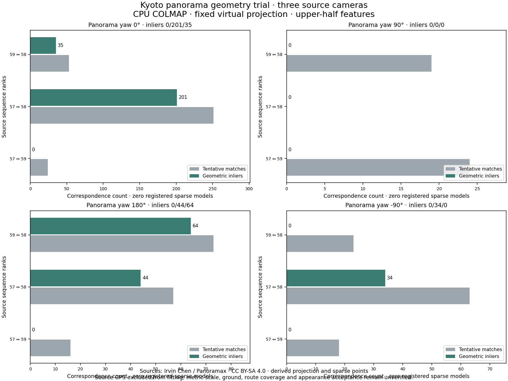
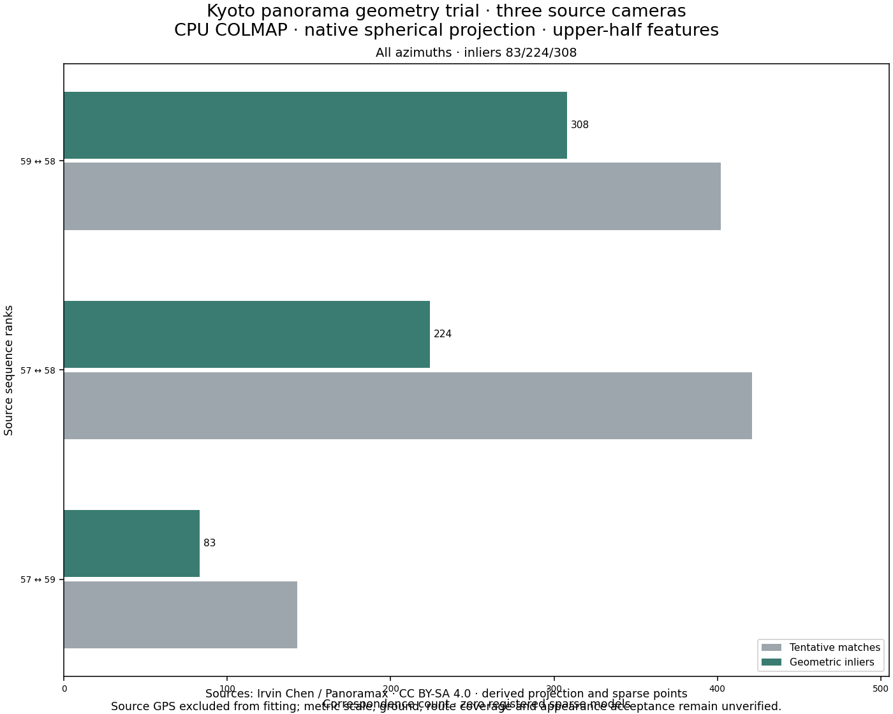
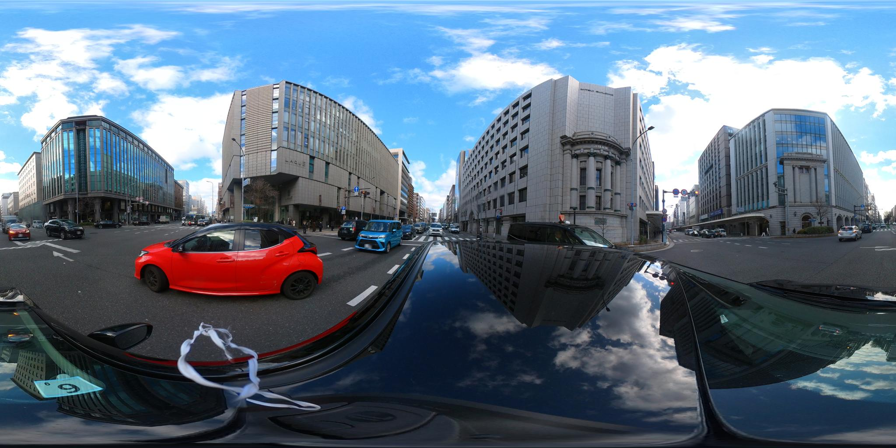

Shijō–Karasuma crossing
Free source photographs and actual reconstruction tests · 14 November 2026
Three native panoramas show the real crossing. Both tested reconstruction methods produced zero registered 3D models. Continuous eastward walking, measured floors, metric scale and night coverage remain unqualified.

What the two geometry tests established
| Method | Actual pair support | Registered 3D model |
|---|---|---|
| Four independent 90° perspective groups | 5 of 12 pairs: 34–201 inliers. One pair classified CALIBRATED. | 0 |
| Native spherical camera | All 3 pairs classified CALIBRATED: 83, 224 and 308 inliers. | 0 |
Both CPU tests use the same three source photographs and an upper-half mask to exclude the capture vehicle roof and ground. CALIBRATED is the library's classification under the declared camera projection. Camera recovery, scale and the walking surface remain open.


The three actual source views
These unchanged service previews show recurring façades, arcades, road markings and daylight shadows. Vehicles obscure lower surfaces, and the capture roof reflects buildings. The source camera positions are declared with 4 m horizontal accuracy.

30.07 m from route edge 1 start. Unchanged 2,048 × 1,024 service preview; full HD acquisition is 6,080 × 3,040.

25.36 m from route edge 1 start. The lower hemisphere contains the capture vehicle and reflected buildings.

41.37 m from route edge 1 start. Traffic, stitching and occlusion require independent geometric review.
Source photographs: Irvin Chen / Panoramax Taiwan, CC BY-SA 4.0, unchanged service previews. Geometry charts: TourGuideAI measurements derived from the attributed source, CC BY-SA 4.0. Source files are provided without warranties under the retained license.
Source intake and qualification details · Exact published file identities